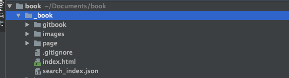
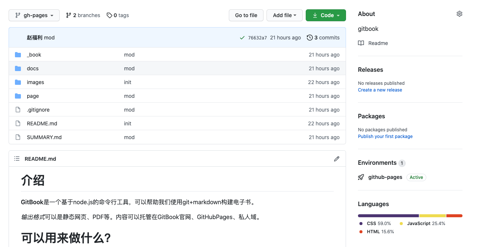
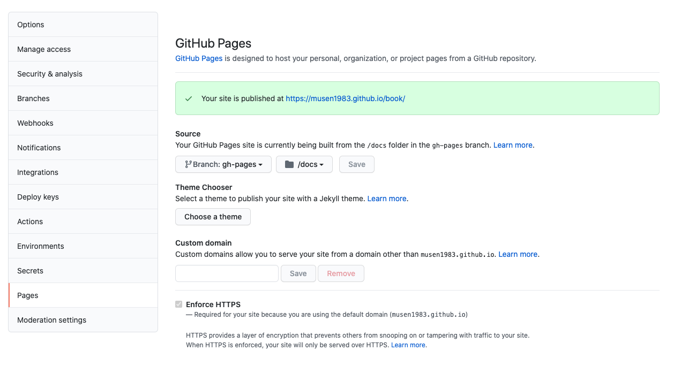

云端发布
gitbook.com上可以支持我们托管发布，除了这个之外，还可以发布到githubpages
之前比较流行的是使用hexo+github搭建个人站 参考hexo搭建个人站
HEXO
之前搭建的个人站 体验上不是特别好，比较麻烦
使用GitBook发布
命令行执行
gitbook build
可以看到生成了_book文件夹，里面是资源文件

所以我们的任务就是将这些资源文件，发布到githubpages上存放起来
登录github，创建一个新的Repository来存放我们编译后的代码。
创建一个gh-pages分支
执行 gitbook build . docs
这个命令是将编译后的文件放到docs文件夹内
之后全部提交到github

提交成功后，打开Repository中的settings选项
找到GitHub Pages 选择我们刚提交过的gh-pages分支 和 docs文件夹

[!note] 最后，访问发布页即可